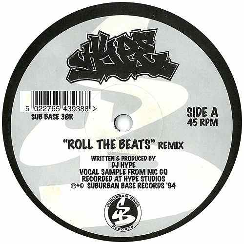
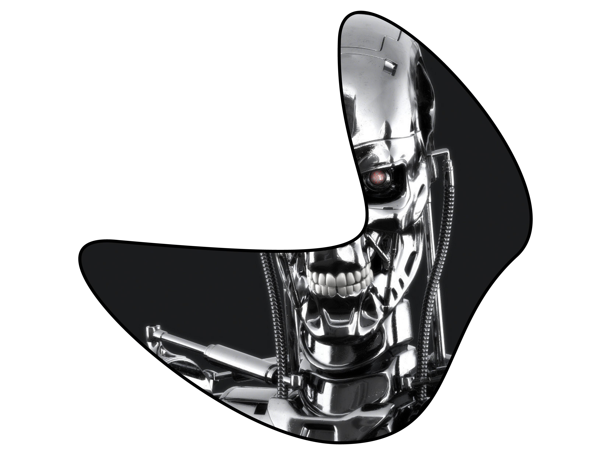

Wire: Vocals were always central to your sound, but they have become even more important on this album than they were on your first LP.
Burial: I was brought up on old jungle tunes and garage tunes had lots of vocals in but me and my brothers loved intense, darker tunes too, I found something I could believe in... but sometimes I used to listen to the ones with vocals on my own and it was almost a secret thing. I’d love these vocals that would come in, not proper singing but cut-up and repeating, and executed coldly. It was like a forbidden siren. I was into the cut-up singing as much as the dark basslines. Something happens when I hear the subs, the rolling drums and vocals together. To me it’s like a pure UK style of music, and I wanted to make tunes based on what UK underground hardcore tunes mean to me, and I want a dose of real life in there too, something people can relate to.
So when I started doing tunes, I didn’t have the kit and I didn’t understand how to do it properly, so I can't make the drums and bass sound massive, no loud sounds taking up the whole tune. But as long as it had a bit of singing in it, it forgave the rest of the tune. It was the thing that made me excited about doing it. Then I couldn’t believe that I’d done a tune that gave me that feeling that proper real records used to, and the vocal was the one thing that seemed to take the tune to that place. My favorite tunes were underground and moody but with killer vocals: 'Let Go' by Teebee, 'Being with you remix' by Foul Play. Intense, Alex Reece, Digital, Goldie, Dillinja, EL-B, D-Bridge, Steve Gurley. I miss being on the bus to school listening to Dj Hype mixes . Sometimes some other kids would get us tunes, I'd record off of pirate radio all night.
Wire: You started off listening to music because of your older brother?
Burial: My older brother loved tunes, rave tunes, jungle, he lived all that stuff, and he was gone, he was on the other side of the night, almost. He was the one who wasn’t back, he was out there, going to places. He’d tell us stories about it. We were brought up on stories about it. Leaving the city in a car and finding somewhere and hearing these tunes, and he’d bring them back. He would sit us down and play these old tunes, and later on he’d play us ‘Metropolis’, Reinforced, Paradox, DJ Hype, Foul Play, DJ Krystl, Source Direct and techno tunes. When you’re younger that stuff blows your mind. But then they, they didn’t lose interest in it, but they got on with life and I was stuck for years. And I would still buy the tunes, and my whole life was going on missions to buy tunes and try and impress em by putting together compilations I thought that they would like. I thought I was holding a lighter up for that stuff, I'd cane Jaffa Cakes and make compilations, slip the odd garage tune in. And even when I started making tunes I was trying to impress them, I still am, but I think they hate my new tunes though. When I grew up I thought everyone would be into jungle and garage tunes but hardly anyone I knew was, in the end.
and make compilations, slip the odd garage tune in. And even when I started making tunes I was trying to impress them, I still am, but I think they hate my new tunes though. When I grew up I thought everyone would be into jungle and garage tunes but hardly anyone I knew was, in the end.
Wire: Your music seems to be about the after effects of Rave, about never actually experiencing it.
Burial: I’ve never been to a festival. Never been to a rave in a field. Never been to a big warehouse, never been to an illegal party, just clubs and playing tunes indoors or whatever. I heard about it, dreamed about it. My brother might bring back these records that seemed really adult to me and I couldn’t believe I had ‘em. It was like when you first saw Terminator or Alien when you're only little. I’d get a rush from it, I was hearing this other world, and my brother would drop by late and I’d fall asleep listening to tunes he put on.
Wire: I suppose your contact with Rave through your brother is what makes your records so mournful: you know what is missing now, whereas others might not even know what they are missing.
Burial: I don’t know if it exists any more at all. A lot of those old tunes I put on at night and hear something in the tune that makes me feel sad, - a few of my favourite producers and DJs are dead now too - and I hear this hope in all those old tracks, trying to unite the UK, but they couldn't, because the UK was changing in a different direction, away from us. Maybe the feeling of the UK in clubs and stuff back then, it wasn't as artificial , self-aware or created by the internet. It was more rumour, underground folklore. No mobile phones back then. Anyone could go into the night and they had to seek it out. Because you could see it in people, you could see it in their eyes. Those ravers were at the edge at their lives, they weren’t running ahead or falling behind, they were just right there and the tunes meant everything. In the 90s you could feel that it had been taken away from them. In club culture, it all became like super-clubs, magazines, trance, commercialized. All these designer bars would be trying to be like clubs. It all got just taken. So it just went militant, underground from that point. That era is gone, now there's less danger, less sacrifice, less journey to find something. You can't hide, the media clocks everything. The internet or whatever, but DMZ and FWD have that deep atmosphere and real feeling, the true underground is still strong, I hear good new tunes all the time.
 DARKSIDE
DARKSIDE
DARKSIDE